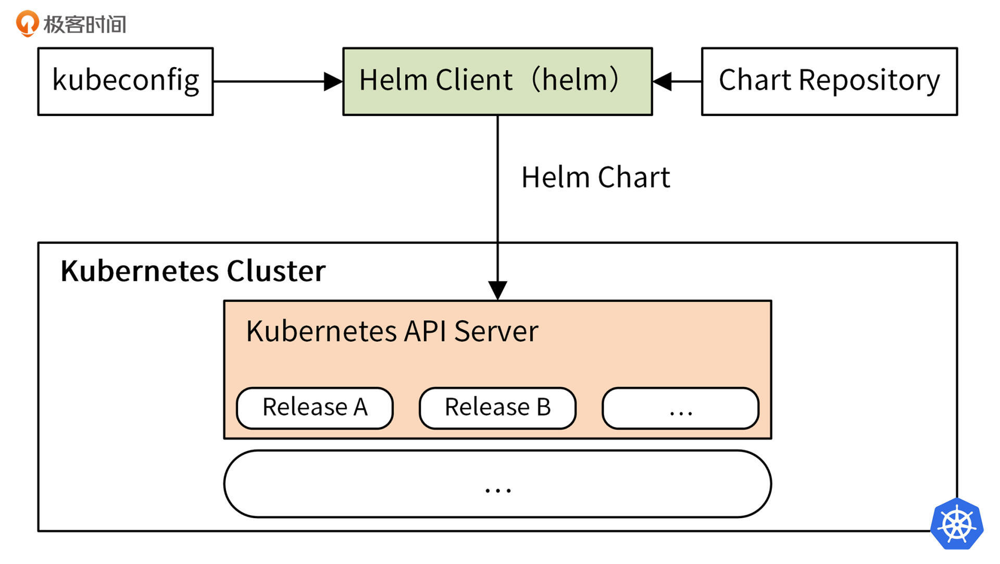
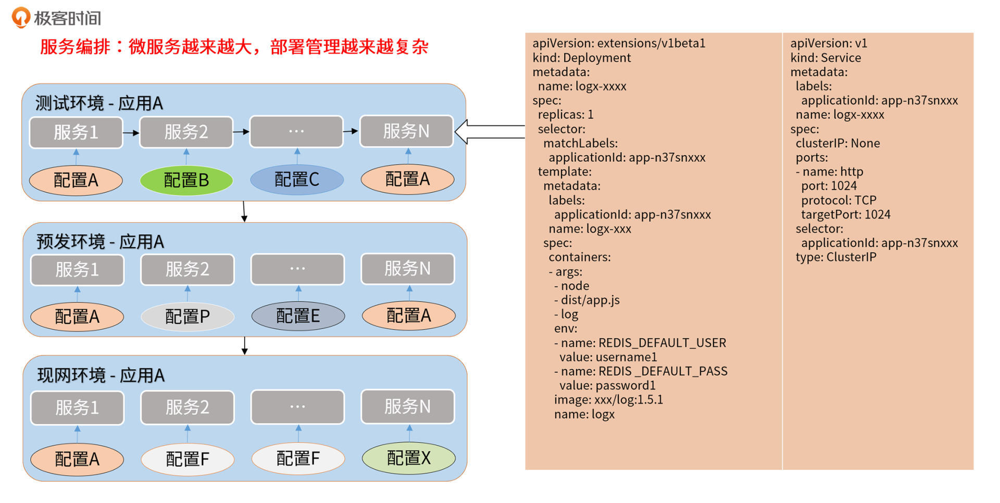
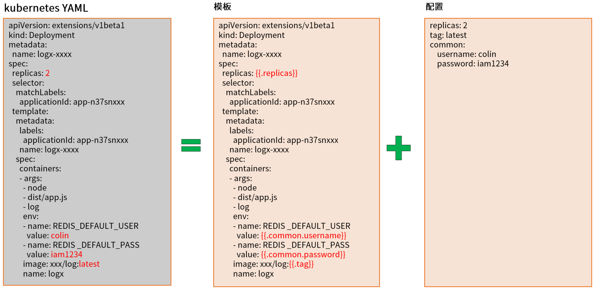
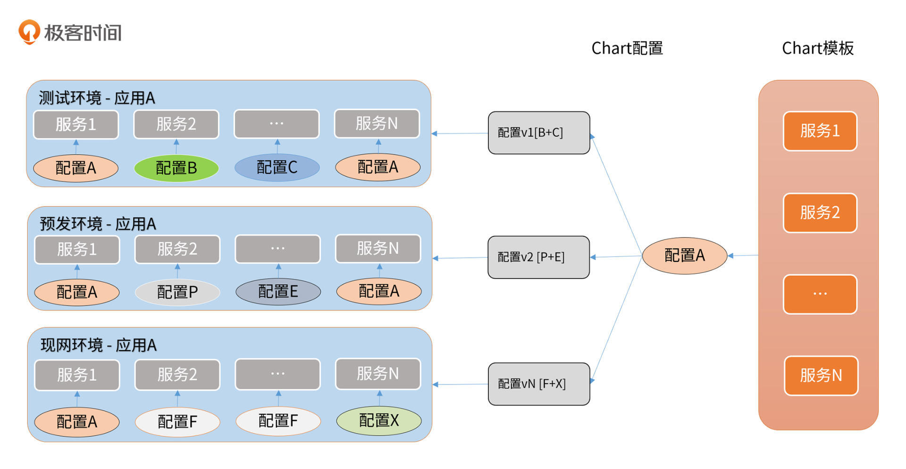
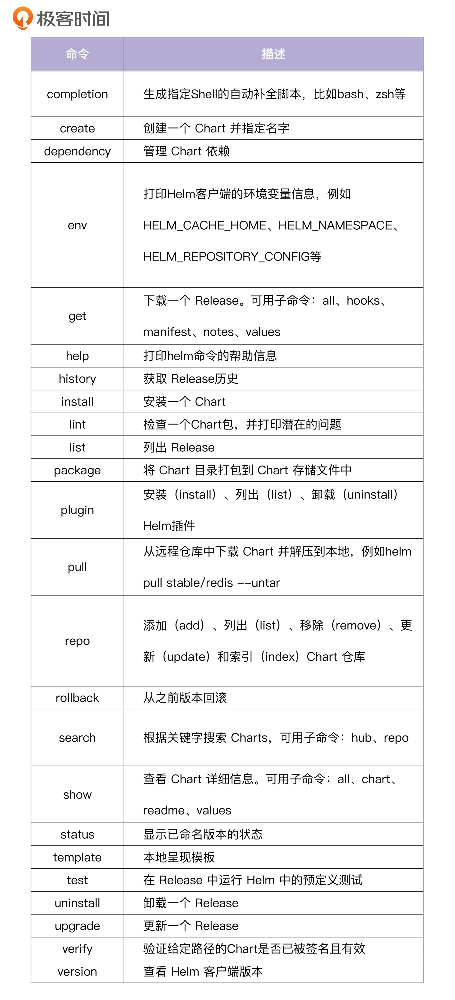

- 00 开篇词 从 0 开始搭建一个企业级 Go 应用.md.html
- 01 IAM系统概述：我们要实现什么样的 Go 项目？.md.html
- 02 环境准备：如何安装和配置一个基本的 Go 开发环境？.md.html
- 03 项目部署：如何快速部署 IAM 系统？.md.html
- 04 规范设计（上）：项目开发杂乱无章，如何规范？.md.html
- 05 规范设计（下）：commit 信息风格迥异、难以阅读，如何规范？.md.html
- 06 目录结构设计：如何组织一个可维护、可扩展的代码目录？.md.html
- 07 工作流设计：如何设计合理的多人开发模式？.md.html
- 08 研发流程设计（上）：如何设计 Go 项目的开发流程？.md.html
- 09 研发流程设计（下）：如何管理应用的生命周期？.md.html
- 10 设计方法：怎么写出优雅的 Go 项目？.md.html
- 11 设计模式：Go常用设计模式概述.md.html
- 12 API 风格（上）：如何设计RESTful API？.md.html
- 13 API 风格（下）：RPC API介绍.md.html
- 14 项目管理：如何编写高质量的Makefile？.md.html
- 15 研发流程实战：IAM项目是如何进行研发流程管理的？.md.html
- 16 代码检查：如何进行静态代码检查？.md.html
- 17 API 文档：如何生成 Swagger API 文档 ？.md.html
- 18 错误处理（上）：如何设计一套科学的错误码？.md.html
- 19 错误处理（下）：如何设计错误包？.md.html
- 20 日志处理（上）：如何设计日志包并记录日志？.md.html
- 21 日志处理（下）：手把手教你从 0 编写一个日志包.md.html
- 22 应用构建三剑客：Pflag、Viper、Cobra 核心功能介绍.md.html
- 23 应用构建实战：如何构建一个优秀的企业应用框架？.md.html
- 24 Web 服务：Web 服务核心功能有哪些，如何实现？.md.html
- 25 认证机制：应用程序如何进行访问认证？.md.html
- 26 IAM项目是如何设计和实现访问认证功能的？.md.html
- 27 权限模型：5大权限模型是如何进行资源授权的？.md.html
- 28 控制流（上）：通过iam-apiserver设计，看Web服务的构建.md.html
- 29 控制流（下）：iam-apiserver服务核心功能实现讲解.md.html
- 30 ORM：CURD 神器 GORM 包介绍及实战.md.html
- 31 数据流：通过iam-authz-server设计，看数据流服务的设计.md.html
- 32 数据处理：如何高效处理应用程序产生的数据？.md.html
- 33 SDK 设计（上）：如何设计出一个优秀的 Go SDK？.md.html
- 34 SDK 设计（下）：IAM项目Go SDK设计和实现.md.html
- 35 效率神器：如何设计和实现一个命令行客户端工具？.md.html
- 36 代码测试（上）：如何编写 Go 语言单元测试和性能测试用例？.md.html
- 37 代码测试（下）：Go 语言其他测试类型及 IAM 测试介绍.md.html
- 38 性能分析（上）：如何分析 Go 语言代码的性能？.md.html
- 39 性能分析（下）：API Server性能测试和调优实战.md.html
- 40 软件部署实战（上）：部署方案及负载均衡、高可用组件介绍.md.html
- 41 软件部署实战（中）：IAM 系统生产环境部署实战.md.html
- 42 软件部署实战（下）：IAM系统安全加固、水平扩缩容实战.md.html
- 43 技术演进（上）：虚拟化技术演进之路.md.html
- 44 技术演进（下）：软件架构和应用生命周期技术演进之路.md.html
- 45 基于Kubernetes的云原生架构设计.md.html
- 46 如何制作Docker镜像？.md.html
- 47 如何编写Kubernetes资源定义文件？.md.html
- 48 IAM 容器化部署实战.md.html
- 49 服务编排（上）：Helm服务编排基础知识.md.html
- 50 服务编排（下）：基于Helm的服务编排部署实战.md.html
- 51 基于 GitHub Actions 的 CI 实战.md.html
- 特别放送 Go Modules依赖包管理全讲.md.html
- 特别放送 Go Modules实战.md.html
- 特别放送 IAM排障指南.md.html
- 特别放送 分布式作业系统设计和实现.md.html
- 特别放送 给你一份Go项目中最常用的Makefile核心语法.md.html
- 特别放送 给你一份清晰、可直接套用的Go编码规范.md.html
- 直播加餐 如何从小白进阶成 Go 语言专家？.md.html
- 结束语 如何让自己的 Go 研发之路走得更远？.md.html
- 捐赠
49 服务编排（上）：Helm服务编排基础知识
你好，我是孔令飞。
我们将应用部署在Kubernetes时，可能需要创建多个服务。我就见过一个包含了40多个微服务的超大型应用，每个服务又包含了多个Kubernetes资源，比如 Service、Deployment、StatefulSet、ConfigMap等。相同的应用又要部署在不同的环境中，例如测试环境、预发环境、现网环境等，也就是说应用的配置也不同。
对于一个大型的应用，如果基于YAML文件一个一个地部署Kubernetes资源，是非常繁琐、低效的，而且这些YAML文件维护起来极其复杂，还容易出错。那么，有没有一种更加高效的方式？比如，像Docker镜像一样，将应用需要的Kubernetes资源文件全部打包在一起，通过这个包来整体部署和管理应用，从而降低应用部署和维护的复杂度。
答案是有。我们可以通过Helm Chart包来管理这些Kubernetes文件，并通过helm命令，基于Chart包来创建和管理应用。
接下来，我就来介绍下Helm的基础知识，并给你演示下如何基于Helm部署IAM应用。
Helm基础知识介绍
Helm目前是Kubernetes服务编排事实上的标准。Helm提供了多种功能来支持Kubernetes的服务编排，例如 helm 命令行工具、Chart包、Chart仓库等。下面，我就来详细介绍下。
Helm是什么？
Helm是Kubernetes的包管理器，类似于Python的 pip ，centos的 yum 。Helm主要用来管理Chart包。Helm Chart包中包含一系列YAML格式的Kubernetes资源定义文件，以及这些资源的配置，可以通过Helm Chart包来整体维护这些资源。
Helm也提供了一个helm命令行工具，该工具可以基于Chart包一键创建应用，在创建应用时，可以自定义Chart配置。应用发布者可以通过Helm打包应用、管理应用依赖关系、管理应用版本，并发布应用到软件仓库；对于使用者来说，使用Helm后不需要编写复杂的应用部署文件，可以非常方便地在Kubernetes上查找、安装、升级、回滚、卸载应用程序。
Helm最新的版本是v3，Helm3以Helm2的核心功能为基础，对Chart repo、发行版管理、安全性和library Charts进行了改进。和Helm2比起来，Helm3最明显的变化是删除了Tiller（Helm2 是一种 Client-Server 结构，客户端称为 Helm，服务器称为 Tiller）。Helm3还新增了一些功能，并废弃或重构了Helm2的部分功能，与Helm2不再兼容。此外，Helm3还引入了一些新的实验功能，包括OCI支持。
Helm3架构图如下：

上面的架构图中，核心是Helm Client（helm命令）和Helm Chart包。helm命令可以从Chart Repository中下载Helm Chart包，读取kubeconfig文件，并构建kube-apiserver REST API接口的HTTP请求。通过调用Kubernetes提供的REST API接口，将Chart包中包含的所有以YAML格式定义的Kubernetes资源，在Kubernetes集群中创建。
这些资源以Release的形式存在于Kubernetes集群中，每个Release又包含多个Kubernetes资源，例如Deployment、Pod、Service等。
Helm中的三大基本概念
要学习和使用Helm，一定要了解Helm中的三大基本概念，Helm的所有操作基本都是围绕着这些概念来进行的。下面我来介绍下Helm的三大基本概念。
- Chart： 代表一个Helm包。它包含了在Kubernetes集群中运行应用程序、工具或服务所需的所有YAML格式的资源定义文件。
- Repository（仓库）： 它是用来存放和共享 Helm Chart的地方，类似于存放源码的GitHub的Repository，以及存放镜像的Docker的Repository。
- Release：它是运行在 Kubernetes 集群中的 Chart 的实例。一个Chart通常可以在同一个集群中安装多次。每一次安装都会创建一个新的 Release。
我们为什么要使用Helm？
现在你对Helm已经有了一定了解，这里我再来详细介绍下为什么要使用Helm。
先来看下传统的应用部署模式：

我们有测试环境、预发环境、现网环境三个环境，每个环境中部署一个应用A，应用A中包含了多个服务，每个服务又包含了自己的配置，不同服务之间的配置有些是共享的，例如配置A。
每个服务由一个复杂的Kubernetes YAML格式的文件来定义并创建，可以看到如果靠传统的方式，去维护这些YAML格式文件，并在不同环境下使用不同的配置去创建应用，是一件非常复杂的工作，并且后期YAML文件和Kubernetes集群中部署应用的维护都很复杂。随着微服务规模越来越大，会面临以下挑战：
- 微服务化服务数量急剧增多，给服务管理带来了极大的挑战。
- 服务数量急剧增多，增加了管理难度，对运维部署是一种挑战。
- 服务数量的增多，对服务配置管理也提出了更高的要求。
- 随着服务数量增加，服务依赖关系也变得更加复杂，服务依赖关系的管理难度增大。
- 在环境信息管理方面，在新环境快速部署一个复杂应用变得更加困难。
所以，我们需要一种更好的方式，来维护和管理这些YAML文件和Kubernetes中部署的应用。Helm可以帮我们解决上面这些问题。
接下来，我们来看下Helm是如何解决这些问题的。
在Helm中，可以理解为主要包含两类文件：模板文件和配置文件。模板文件通常有多个，配置文件通常有一个。Helm的模板文件基于text/template模板文件，提供了更加强大的模板渲染能力。Helm可以将配置文件中的值渲染进模板文件中，最终生成一个可以部署的Kubernetes YAML格式的资源定义文件，如下图所示：

上图中，我们将以下配置渲染进了模板中，生成了Kubernetes YAML文件：
replicas: 2
tag: latest
common:
username: colin
password: iam1234
所以在Helm中，部署一个应用可以简化为Chart模板（多个服务） + Chart配置 -> 应用，如下图所示：

Chart模板一个应用只用编写一次，可以重复使用。在部署时，可以指定不同的配置，从而将应用部署在不同的环境中，或者在同一环境中部署不同配置的应用。
Helm 基本操作实战
上面，我介绍了Helm的一些基础知识，这里我们再来学习下如何使用Helm对应用进行生命周期管理。
前置条件
在开始之前，你需要确保你有一个可以使用的Kubernetes集群。目前最方便快捷、最经济的方式是申请一个腾讯云EKS集群。至于如何申请和访问，你可以参考 48讲 “准备一个Kubernetes集群”部分的教程。这里再提醒下，用完集群后，记得删除集群资源，免得被持续扣费。
安装Helm
Helm提供了多种安装方式，在能连通外网的情况下，可以通过脚本来安装，安装命令如下：
$ mkdir -p $HOME/bin
$ wget https://get.helm.sh/helm-v3.6.3-linux-amd64.tar.gz
$ tar -xvzf helm-v3.6.3-linux-amd64.tar.gz
$ mv linux-amd64/helm $HOME/bin
$ chmod +x $HOME/bin/helm
$ helm version
version.BuildInfo{Version:"v3.6.3", GitCommit:"d506314abfb5d21419df8c7e7e68012379db2354", GitTreeState:"clean", GoVersion:"go1.16.5"}
如果执行helm version可以成功打印出 helm 命令的版本号，说明Helm安装成功。
Helm各版本安装包地址见 Helm Releases。
安装完helm命令后，可以安装helm命令的自动补全脚本。假如你用的shell是bash，安装方法如下：
$ helm completion bash > $HOME/.helm-completion.bash
$ echo 'source $HOME/.helm-completion.bash' >> ~/.bashrc
$ bash
执行 helm comp<TAB>，就会自动补全为helm completion。
Helm快速入门
你可以通过以下六个步骤，来快速创建一个Chart应用。
第一步，初始化一个Helm Chart仓库。
安装完Helm之后，就可以使用 helm 命令添加一个Chart仓库。类似于用来托管Docker镜像的DockerHub、用来托管代码的GitHub，Chart包也有一个托管平台，当前比较流行的Chart包托管平台是Artifact Hub。
Artifact Hub上有很多Chart仓库，我们可以添加需要的Chart仓库，这里我们添加BitNami提供的Chart仓库：
$ helm repo add bitnami https://charts.bitnami.com/bitnami # 添加 Chart Repository
$ helm repo list # 查看添加的 Repository 列表
添加完成后，我们可以通过helm search命令，来查询需要的Chart包。helm search支持两种不同的查询方式，这里我来介绍下。
helm search repo<keyword>：从你使用helm repo add添加到本地 Helm 客户端中的仓库里查找。该命令基于本地数据进行搜索，无需连接外网。helm search hub<keyword>：从 Artifact Hub 中查找并列出 Helm Charts。 Artifact Hub中存放了大量的仓库。
Helm 搜索使用模糊字符串匹配算法，所以你可以只输入名字的一部分。下面是一个helm search的示例：
$ helm search repo bitnami
NAME CHART VERSION APP VERSION DESCRIPTION
bitnami/bitnami-common 0.0.9 0.0.9 DEPRECATED Chart with custom templates used in ...
bitnami/airflow 10.2.8 2.1.2 Apache Airflow is a platform to programmaticall...
bitnami/apache 8.6.1 2.4.48 Chart for Apache HTTP Server
bitnami/argo-cd 1.0.2 2.0.5 Declarative, GitOps continuous delivery tool fo...
bitnami/aspnet-core 1.3.14 3.1.18 ASP.NET Core is an open-source framework create...
bitnami/cassandra 8.0.2 4.0.0 Apache Cassandra is a free and open-source dist...
bitnami/cert-manager 0.1.15 1.5.1 Cert Manager is a Kubernetes add-on to automate...
# ... and many more
第二步，安装一个示例Chart。
查询到自己需要的Helm Chart后，就可以通过helm install命令来安装一个Chart。helm install支持从多种源进行安装：
- Chart的Repository。
- 本地的Chart Archive，例如
helm install foo foo-1.0.0.tgz。 - 一个未打包的Chart路径，例如
helm install foo path/to/foo。 - 一个完整的URL，例如
helm install foo https://example.com/charts/foo-1.0.0.tgz。
这里，我们选择通过bitnami/mysql Chart包来安装一个MySQL应用。你可以执行 helm show chart bitnami/mysql 命令，来简单了解这个Chart的基本信息。 或者，你也可以执行 helm show all bitnami/mysql，获取关于该Chart的所有信息。
接下来，就可以使用helm install命令来安装这个Chart包了。安装命令如下：
$ helm repo update # Make sure we get the latest list of charts
$ helm install bitnami/mysql --generate-name
NAME: mysql-1629528555
LAST DEPLOYED: Sat Aug 21 14:49:19 2021
NAMESPACE: default
STATUS: deployed
REVISION: 1
TEST SUITE: None
NOTES: ...
在上面的例子中，我们通过安装bitnami/mysql这个Chart，创建了一个mysql-1629528555 Release。--generate-name参数告诉Helm自动为这个Release命名。
在安装过程中，Helm 客户端会打印一些有用的信息，包括哪些资源已经被创建，Release当前的状态，以及你是否还需要执行额外的配置步骤。例如，从上述例子的输出中，你可以获取到数据库的Root密码、登陆方式、更新方式等信息。
安装完之后，你可以使用 helm status 来追踪Release 的状态。
每当你执行 helm install 的时候，都会创建一个新的发布版本。所以一个Chart在同一个集群里面可以被安装多次，每一个都可以被独立地管理和升级。
helm install命令会将templates渲染成最终的Kubernetes能够识别的YAML格式，然后安装到Kubernetes集群中。
helm install 功能非常强大，想了解更多功能，你可以参考这个指南：使用 Helm。
第三步，安装前自定义 Chart。
上一步中的安装方式只会使用 Chart 的默认配置选项，很多时候我们需要自定义 Chart 来指定我们想要的配置。使用 helm show values 可以查看 Chart 中的可配置选项：
$ helm show values bitnami/mysql # 为了方便展示，我删除了 `helm show values`输出中的`#`注释
# ... and many more
architecture: standalone
auth:
rootPassword: ""
database: my_database
username: ""
password: ""
replicationUser: replicator
replicationPassword: ""
existingSecret: ""
forcePassword: false
usePasswordFiles: false
customPasswordFiles: {}
initdbScripts: {}
# ... and many more
然后，你可以使用 YAML 格式的文件，覆盖上述任意配置项，并在安装过程中使用该文件。
$ echo '{auth.database: iam, auth.username: iam, auth.password: iam59!z$}' > values.yaml
$ helm install bitnami/mysql -f values.yaml --generate-name
上述命令将为 MySQL 创建一个名称为 iam 的默认用户，密码为iam59!z$，并且授予该用户访问新建的 iam 数据库的权限。Chart 中的其他默认配置保持不变。
安装过程中，有两种传递配置数据的方式。
-f, --values：使用 YAML 文件覆盖配置。可以指定多次，优先使用最右边的文件。--set：通过命令行的方式对指定配置项进行覆盖。
如果同时使用两种方式，则 --set 中的值会被合并到 --values 中，但是 --set 中的值优先级更高。在--set中覆盖的内容会被保存在 ConfigMap 中。你可以通过 helm get values <release-name> 来查看指定 Release 中 --set 设置的值，也可以通过运行 helm upgrade 并指定 --reset-values 字段，来清除 --set中设置的值。
这里我讲解下--set的格式和限制。
--set 选项使用0或多个key-value 对。最简单的用法类似于--set name=value，等价于下面这个 YAML 格式：
name: value
多个值之间使用逗号分割，因此--set a=b,c=d 的 YAML 表示是：
a: b
c: d
--set还支持更复杂的表达式。例如，--set outer.inner=value 被转换成了：
outer:
inner: value
列表使用花括号{}来表示。例如，--set name={a, b, c} 被转换成了：
name:
- a
- b
- c
从 2.5.0 版本开始，我们可以使用数组下标的语法来访问列表中的元素了。例如 --set servers[0].port=80 就变成了：
servers:
- port: 80
多个值也可以通过这种方式来设置。--set servers[0] [0].host=marmotedu 变成了：
servers:
- port: 80
host: marmotedu
如果需要在 --set 中使用特殊字符，你可以使用反斜线来进行转义，比如--set name=value1\,value2 就变成了：
name: "value1,value2"
如果是深层嵌套的数据结构，可能很难用--set 来表达，更多内容你可以参考 Values 文件。
第四步，查看当前集群安装了哪些Release。
通过helm list可以查看当前集群、当前Namespace下安装的Release列表：
$ helm list
NAME NAMESPACE REVISION UPDATED STATUS CHART APP VERSION
mysql-1629528555 default 1 2021-08-21 14:49:19.101935218 +0800 CST deployed mysql-8.8.4 8.0.26
mysql-1629529348 default 1 2021-08-21 15:02:32.079969128 +0800 CST deployed mysql-8.8.4 8.0.26
可以看到，我们创建了两个Release，这些Release位于default命名空间中。上述命令，也列出了Release的更新时间、状态、Chart的版本等。
第五步，升级 Release，并且在失败时恢复。
部署完应用之后，后续还可能升级应用，可以通过helm upgrade命令来升级应用。升级操作会基于已有的Release，根据提供的信息进行升级。Helm在更新时，只会变更有更改的内容。
例如，这里我们升级mysql-1629528555，变更它的Root密码：
$ helm upgrade mysql-1629528555 bitnami/mysql --set auth.rootPassword='iam59!z$'
在上面的例子中，mysql-1629528555 这个 Release 使用相同的 Chart 进行升级，但使用了一个新的rootPassword配置。
我们可以使用 helm get values 命令，来看看配置值是否真的生效了：
$ helm get values mysql-1629528555
USER-SUPPLIED VALUES:
auth:
rootPassword: iam59!z$
可以看到rootPassword 的新值已经被部署到集群中了。
假如发布失败，我们也很容易通过 helm rollback [RELEASE] [REVISION] 命令，回滚到之前的发布版本。
$ helm rollback mysql-1629528555 1
上面这条命令将我们的mysql-1629528555回滚到了它最初的版本。Release 版本其实是一个增量修订（revision）。 每当发生了一次安装、升级或回滚操作，revision 的值就会加1。第一次 revision 的值永远是1。
我们可以使用 helm history [RELEASE] 命令来查看一个特定 Release 的修订版本号：
$ helm history mysql-1629528555
REVISION UPDATED STATUS CHART APP VERSION DESCRIPTION
1 Sat Aug 21 14:49:19 2021 superseded mysql-8.8.4 8.0.26 Install complete
2 Sat Aug 21 15:14:45 2021 deployed mysql-8.8.4 8.0.26 Upgrade complete
你还可以指定一些其他的选项，来自定义 Helm 在安装、升级、回滚期间的行为。这里，我介绍一些常用的参数，供你参考。
--timeout：一个 Go duration 类型的值，用来表示等待 Kubernetes 命令完成的超时时间，默认值为5m0s。--no-hooks：不运行当前命令的钩子。--wait：表示必须要等到所有的 Pods 都处于 ready 状态、PVC 都被绑定、Deployments处在 ready 状态的Pods 个数达到最小值（Desired减去 maxUnavailable），才会标记该 Release 为成功。最长等待时间由--timeout值指定。如果达到超时时间，Release 将被标记为FAILED。
这里需要注意，当 Deployment 的 replicas 被设置为1，但其滚动升级策略中的maxUnavailable 没有被设置为0时，--wait 将返回就绪，因为已经满足了最小 ready Pod 数。
第六步，卸载Release。
你可以使用helm uninstall命令卸载一个Release：
$ helm uninstall mysql-1629528555
上述命令会从Kubernetes卸载 mysql-1629528555， 它将删除和该版本关联的所有资源（Service、Deployment、Pod、ConfigMap等），包括该Release的所有版本历史。
如果你在执行 helm uninstall 的时候提供--keep-history 选项， Helm将会保存版本历史。 你可以通过helm status命令查看该版本的信息：
$ helm status mysql-1629528555
Status: UNINSTALLED
...
因为 --keep-history 选项会让Helm跟踪你的版本（即使你卸载了它们），所以你可以审计集群历史，甚至使用 helm rollback 回滚版本。
Helm命令
上面我介绍了Helm的一些命令的用法，如果你想查看Helm提供的所有命令，可以执行helm help。或者，你也可以执行helm <subcommand> -h来查看某个子命令的用法，例如：
$ helm get -h
This command consists of multiple subcommands which can be used to
get extended information about the release, including:
- The values used to generate the release
- The generated manifest file
- The notes provided by the chart of the release
- The hooks associated with the release
Usage:
helm get [command]
# ... and many more
我整理了一份命令列表，供你参考：

上面这些命令中，有些提供了子命令和命令行参数，具体你可以执行helm <subcommand> -h来查看。
总结
今天，我介绍了Helm的基础知识，并给你演示了如何基于Helm部署IAM应用。
当一个应用包含了很多微服务时，手动在Kubernetes集群中部署、升级、回滚这些微服务是一件非常复杂的工作。这时候，我们就需要一个服务编排方案来编排这些服务，从而提高服务部署和维护的效率。
目前业界提供了多种服务编排方案，其中最流行的是Helm，Helm已经成为一个事实上的Kubernetes服务编排标准。
在Helm中，有Chart、Repository和Release三大基本概念。Chart 代表一个Helm包，里面包含了运行Kubernetes应用需要的所有资源定义YAML文件；Repository是Chart仓库，用来存放和共享 Helm Chart；Release是运行在 Kubernetes 集群中的 Chart 的实例。
我们可以通过 helm install [NAME] [CHART] [flags] 来安装一个Chart包；通过 helm upgrade [RELEASE] [CHART] [flags] 来更新一个Helm Release；通过 helm uninstall RELEASE_NAME [...] [flags] 来卸载一个Helm Release。另外，helm 命令行工具还提供了其他的功能，你可以再回顾一遍。
课后练习
- 思考下，如果使用Helm创建服务，是否会存在先启动服务，再创建服务配置，从而导致服务启动时加载配置失败的问题？如果有，Helm可以怎样解决这个问题？
- 尝试将IAM应用制作成一个Chart包，并通过Helm安装。
欢迎你在留言区与我交流讨论，我们下一讲见。
© 2019 - 2023 Liangliang Lee. Powered by gin and hexo-theme-book.